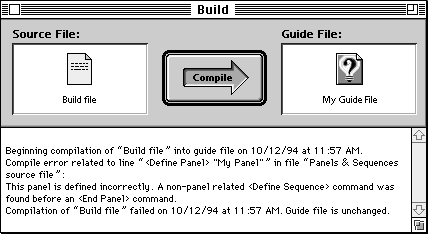
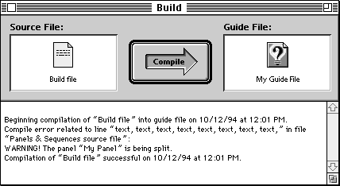

Legacy Document
Important: The information in this document is obsolete and should not be used for new development.
Important: The information in this document is obsolete and should not be used for new development.


Interpreting the Compile Messages
When you compile your source files, you might get messages indicating that the compile process didn't go as you expected. There are two types of compile messages--error messages and warning messages.If you get an error message, it means that Guide Maker was unable to compile your source files and you must correct the error before you complete the compile process. For example, if you accidentally leave out an <End Panel> command in one of your source files, you get an error message. Figure 5-5 illustrates this type of error message.
Figure 5-5 Guide Maker displaying a compile error message

If you get a warning message, it indicates that Guide Maker found a potential problem with your guide file. It is a good idea to investigate the problem, even though it has not caused compilation to fail. For example, if the content of one of your panels is larger than the panel itself and you have selected the "Warn when panels are split" compile option, you get a warning message. Figure 5-6 illustrates this type of warning message.
- Note
- If you get a compile error, your guide file does not change; it is updated only after you successfully compile it and save it.

Figure 5-6 Guide Maker displaying a warning message

To keep a record of your error and warning messages, save and print them using the Save Text and Print Text commands of the File menu.